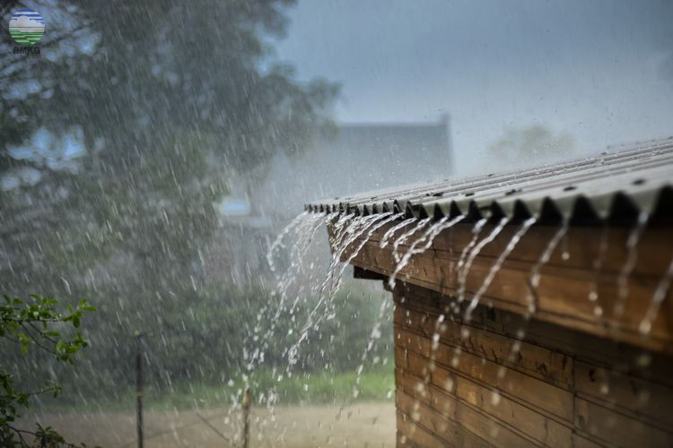
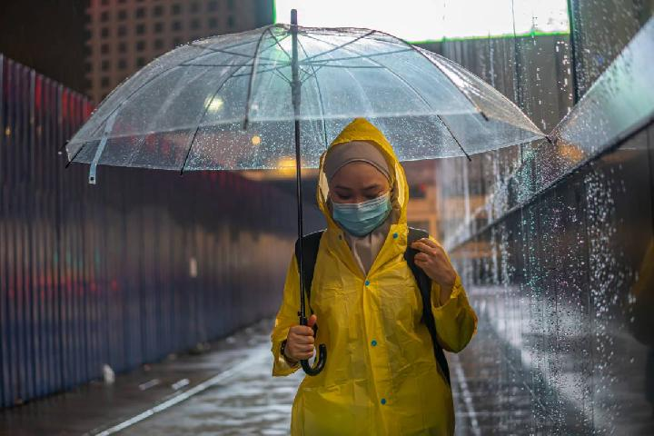

WELCOME
|
||||||||
WELCOME |
||||||||
|
GALLERY |
|  |  |
|
BLOG |
Cara Menjaga Kesehatan Saat Musim Hujan Menjaga kesehatan saat musim hujan merupakan hal penting karena cuaca yang lembab dan dingin dapat meningkatkan risiko penyakit tertentu. Berikut beberapa tips untuk menjaga kesehatan Anda selama musim hujan: Mengonsumsi Makanan Bergizi: Pastikan untuk makan makanan yang sehat dan bergizi, terutama yang mengandung banyak vitamin dan mineral. Buah-buahan segar dan sayuran hijau berdaun akan membantu meningkatkan sistem kekebalan tubuh Anda. Menjaga Kebersihan: Cucilah tangan secara teratur dengan sabun dan air hangat, terutama sebelum makan dan setelah menggunakan toilet. Hindari menyentuh wajah Anda dengan tangan yang kotor untuk mencegah penyebaran infeksi. Hindari Kontak dengan Orang Sakit: Jika memungkinkan, hindari kontak dekat dengan orang yang sedang sakit, terutama jika mereka mengalami gejala seperti batuk dan pilek. Gunakan masker wajah jika Anda harus berinteraksi dengan orang yang sakit. Tetap Kering: Hindari basah kuyup dalam cuaca hujan. Pakailah payung atau jas hujan saat bepergian di luar ruangan. Pastikan untuk mengeringkan pakaian basah dengan cepat untuk mencegah masuknya kelembaban ke dalam tubuh. Menghindari Genangan Air: Jangan berjalan di genangan air, karena air hujan yang tergenang bisa menjadi sarang bagi bakteri dan virus. Juga, pastikan untuk membersihkan rumah Anda secara teratur dan memastikan tidak ada genangan air di sekitar rumah. Mengonsumsi Cairan yang Cukup: Pastikan Anda minum cukup air untuk menjaga tubuh tetap terhidrasi. Air hangat dengan madu dan lemon dapat membantu meredakan gejala flu dan pilek. Rajin Berolahraga: Tetap aktif dan rajin berolahraga untuk menjaga daya tahan tubuh Anda. Meskipun musim hujan, Anda masih bisa berolahraga di dalam ruangan atau memilih aktivitas olahraga yang sesuai dengan kondisi cuaca. Istirahat yang Cukup: Pastikan Anda mendapatkan istirahat yang cukup setiap hari. Istirahat yang baik membantu memperkuat sistem kekebalan tubuh Anda, sehingga Anda lebih tahan terhadap infeksi. Mengelola Stres: Jaga keseimbangan mental Anda dengan mengelola stres secara efektif. Berolahraga, meditasi, atau menikmati hobi yang menyenangkan dapat membantu meredakan stres dan menjaga kesehatan mental Anda. Dengan mengikuti tips di atas, Anda dapat menjaga kesehatan tubuh dan mental Anda selama musim hujan. Tetap waspada dan berhati-hati terhadap perubahan cuaca, serta lakukan langkah-langkah pencegahan yang diperlukan untuk tetap sehat dan bugar. |
|
Kevin Rimper kev34172@gmail.com 087714531975 Jln elang raya |